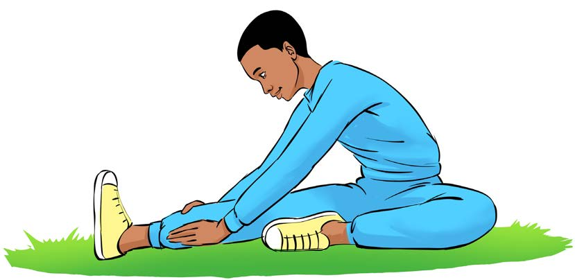

3. Kunyoosha sehemu ya nyuma ya paja:
(a) Keti chini ukinyoosha miguu na kuitanua;
(b) Kunja mguu mmoja;
(c) Inama kuelekea mguu ulioonyooshwa, kama inavyoonekana katika Kielelezo namba 4;
(d) Shikilia kwa sekunde 10 hadi 15; na
(e) Badilisha mguu na kurudia hatua hizo.

4. Kunyoosha kigimbi:
(a) Simama wima na pishanisha miguu;
(b) Egemea mbele ukikandamiza kisigino cha mguu wa nyuma ardhini;
(c) Kamata mguu wa mbele kwa mikono, kama inavyoonekana katika Kielelezo namba 5;
(d) Shikilia kwa sekunde 10 hadi 15; na
(e) Badilisha mguu na kurudia hatua hizo.